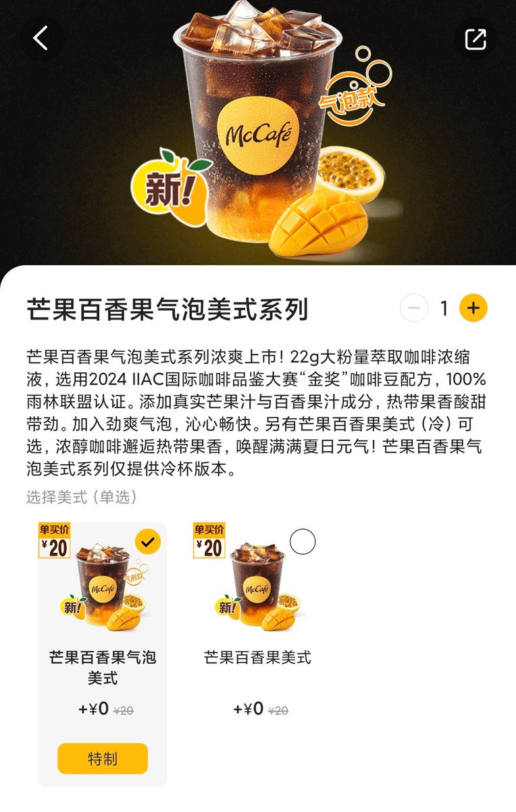
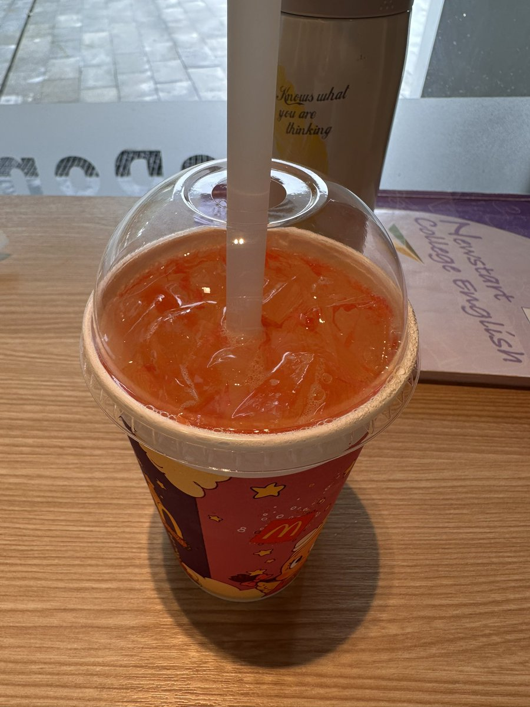
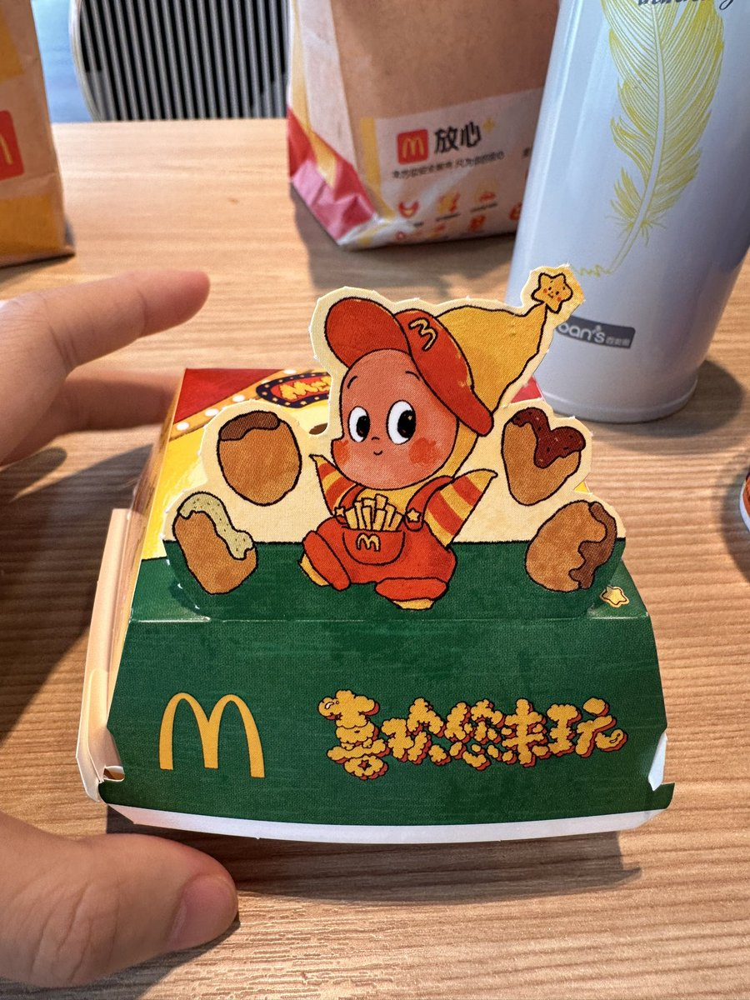

⏚FrankLau⏚
@FrankkkkkkLau
@linlitsuing 这个挺好喝, 可以试试



奕晴📷
@linlitsuing
测评麦当劳新品
右边的星星薯饼本身一般🍟做不到薯条那样蘸酱和不蘸同样是封神口味的水准🤔但是披萨风味酱的味道又可以封神，属于是人上人和顶级中间的位置。
左边的橘子风味汽水拉完了😵比VC泡腾片和布洛芬美林还淡。刚开始是抱着喝北冰洋和芬达的心去点的，喝完以后才知道自己喝的是达芬 https://t.co/0xddVGxwz2